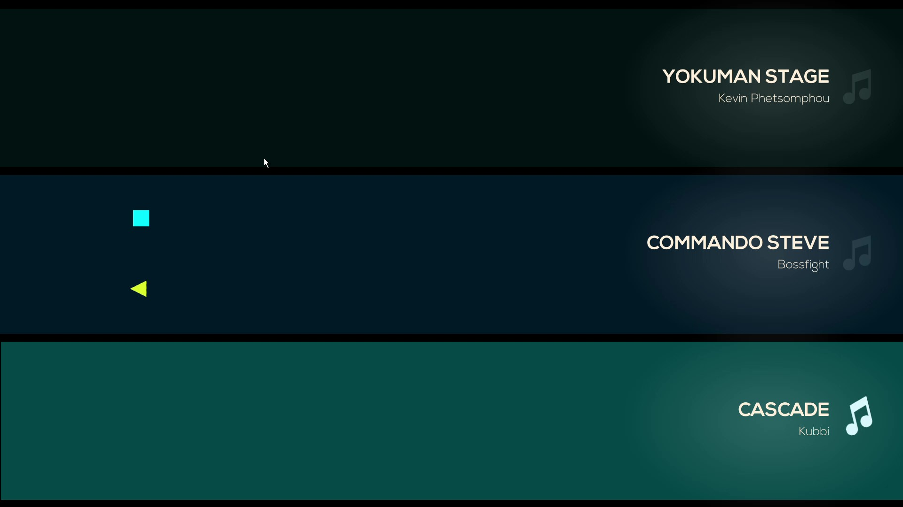

Just shapes and beats is a bullet hell game where you play through levels that are based off songs in which the song is your cue to when the pink objects show up and you have to avoid them.
The gameplay of just shapes and beats which is a bullet hell game is fast paced and can get chaotic at times on some of the harder and faster levels where you can get 4 people playing 1 level.
The music in game is made from other people so I cannot rate this well, but the songs choosen are great in-game.
The only mechanics the player has to worry about in just shapes and beats is their hp, dashing, saving others and avoiding everything pink. These mechanics together make for a fun game and good mechanics that are simple that anyone can learn.
the graphics are simple with most things only being one colour and being bright, overall the art style is nice but can be harsh on people with sesitive eyes.
The user interface is clean and simple to use and its hard to get lost in them.
just shapes and beats lacks in a story as all the story is that there is a tree that gives light to the land and an infection spreads around causing everything to be evil.
There are not many bugs but somethings could be concidered one such as safe spots on some levels but they are not really bugs.
I like just shapes and beats beause its a fast paced game that I can enjoy with friends and have a bit of chaos with as its fun to do the hardcore mode together.
In just shapes and beats if you play anything apart from the story mode you will get beat points which are given to you after each song and you will get bonus point depending on what you do in the level, they will unlock more songs in the song selection list once you hit a certain amount.
The dash in just shapes and beats is your best friend as while you are dashing you wont take damage and can be used to go through objects and bullets and is a fast movement option when trying to save a friend.
Play with friends and have more fun. While playing online or local with friends when one of you dies you can get rescued by them touching you while you float away which will bring you back and you can not get hit for a short period of time and they or you will have gained 1hp back.
